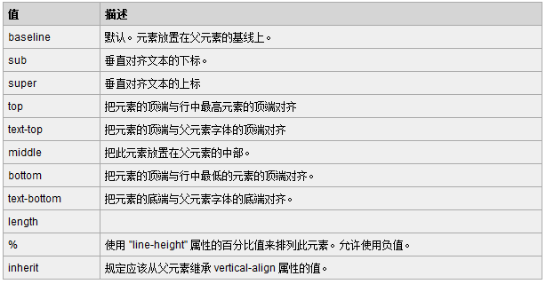
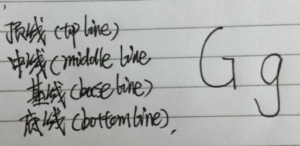
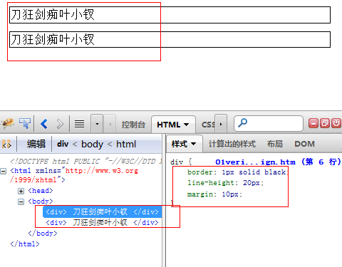
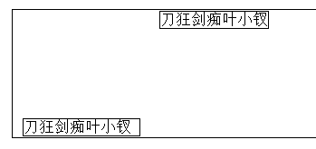
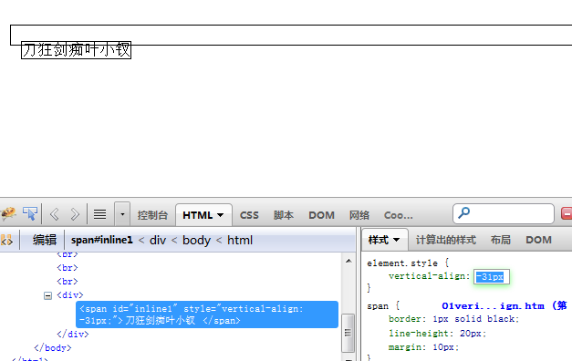
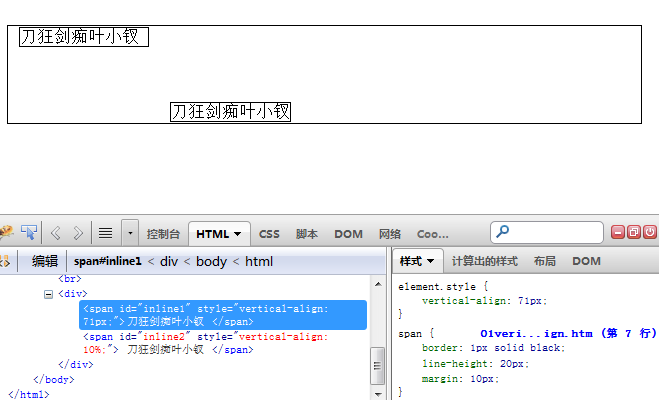

前言
最近学习CSS有点走火入魔了，CSS一直是自己的短板，没想到最近居然能静下心来学了这么多CSS的东西，着实值得表扬。
俗话说得好，不疯活不成魔，我最近真有点刀狂剑痴的味道了。
有时候晚上学习结束后，一晚上睡得很浅，我感觉下雨了，但下的雨居然全部是html标签！
我在电梯里面看到了一张手机中的图片，我诡异的笑了，因为我好像看到了他的布局了！
于是，我魔杖了，是的，这是入魔的征兆！凡是皆有其度，之前的过度就导致了我今天的问题。
我今天居然不知道该学习什么了。。。。学习如逆水行舟，所以我们都要放平心态，一起再来看看吧，一起建设我们的CSS世界观啦！
本文参考：
http://www.zhangxinxu.com/wordpress/?p=813
CSS布局（一）
vertical-align
对的，本文的主角就是这个家伙，其实之前一次又一次的提到了这个家伙，今天却又把它揪了出来，因为我发现我对他还是不够了解。

数字
vertical-align: 2px;
这个的意思就是元素相对于基线向上偏移2px的意思，于是我们又会遇到基线，什么是基线呢？
我这里不好意思偷图了，就自己画一个吧：

知道神马是基线了吧，虽然老夫很久不写字了，但是想不到还是如此的飘泊！
百分比
我们之前碰到的百分比，比如width/height都是相对于父元素，其中font-size是相对于最近一个拥有该属性的元素，而vertical-align是相对于该标签的line-height而言的。
以上两个来个例子：

这是一个好姑娘，于是我们改下代码：
PS：上面犯了一个很2的错误，将vertical-align用到了div上，大家不要像我这样2
1 <html xmlns="http://www.w3.org/1999/xhtml"> 2 <head> 3 <title></title> 4 <style type="text/css"> 5 div { margin: 10px; border: 1px solid black; } 6 span { margin: 10px; border: 1px solid black; line-height: 20px; } 7 </style> 8 </head> 9 <body> 10 <div> 11 <span style="vertical-align: 4px;">刀狂剑痴叶小钗 </span><span style="vertical-align: 10%;"> 12 刀狂剑痴叶小钗 </span> 13 </div> 14 </body> 15 </html>
这块地方有很多可以注意的，也有很多东西可以看，所以我这里建议各位去运行试试。
你会发现div的高度会跟着变化滴！！！

来，我们一起来探讨下这个问题，哎，我这里还是上例子吧：

大家看这个例子，我这里将其设置为负值，行内元素就跑到块级元素外面去了哦。
更有意思的东西在后面呢，我们在一个块级元素里面有2个行内元素，我们是可能将块级元素撑开的！！！

在有2个行内元素时候，我们为其中一个vertical-align设置较大或者较小的值就会导致块级元素变高！！！这是为什么呢？
其实这个要理解说容易也容易说难还真有点难，我们想象其中的盒子一个往上一个往下（相对于基线），所以整个块级盒子变高了！！！
结语
今天不知怎么有点小感冒，今天暂时到这里了，我们下次继续。